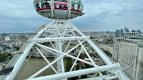
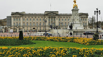
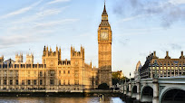
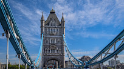
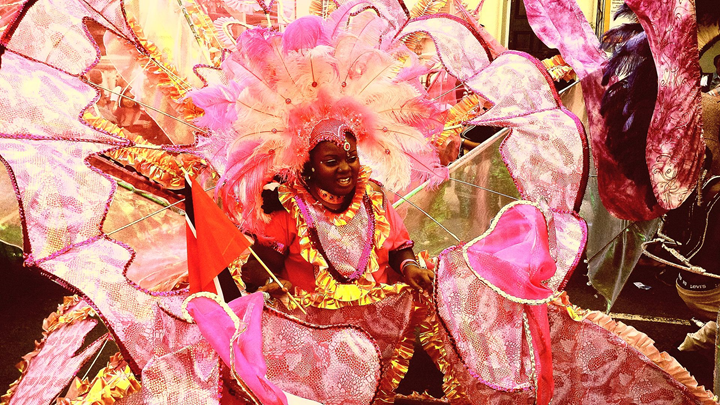

< 런던 주요명소 >

런던아이

버킹엄궁전

빅벤

세인트 폴 대성당

웨스터 민스터 사원

타워브릿지
런던아이
버킹엄궁전
빅벤
세인트 폴 대성당
웨스터 민스터 사원
타워브릿지
뱅어 앤 매시
선데이로스트
스테이크&키드니파이
애프터눈티
영국식 아침식사
피시 앤 칩스
바스 프린지 페스티벌

바스 프린지 페스티벌은 영국뿐만 아니라 유럽을 대표하는 축제 중 하나입니다. 로마시대부터 온천과 목욕탕으로 유명했던 영국의 바스(Bath) 지역에서 개최되는 축제로 문화예술인들이 자유롭게 자신의 예술 세계를 표현하는 행사가 다양하게 펼쳐집니다. 참가 기준이 따로 없기 때문에 아마추어 예술가부터 전문 예술 단체까지 모두 자유롭게 축제에 참가할 수 있습니다. 누구나 참여할 수 있는 축제라 실수에 관대한 분위기인데요 편견 없이 공연을 바라보는 관객 문화로 인해 프린지 페스티벌에서는 곳곳에서 사람들의 웃음소리와 환호소리가 끊이지 않습니다.
날짜 : 5월 말~6월 초
노팅힐 카니발
영국 런던의 노팅힐 지역에서는 매년 8월 마지막 주말에 ‘노팅힐 카니발’을 개최합니다. 이 축제는 노팅힐 지역에 거주하던 아프로-카리브(Afro-Caribbean) 이민자들이 1964년에 자신들의 문화와 전통을 알리기 위해 처음 시작한 거리 축제입니다. 노팅힐 카니발은 전통과 현대가 어우러진 다양한 음악 밴드들이 거리 음악회를 개최하고 카리브해 서인도제도의 이국적인 음식들을 거리 곳곳에서 만날 수 있는 흥겨운 축제입니다. 지역 축제로 시작된 이 카니발은 성장을 거듭해 현재는 매년 100만 명 이상의 관람객이 모여들고 1억 유로가 넘는 경제적 가치를 생산하는 대규모 축제로 발전했습니다. 유럽에서 가장 규모가 큰 축제이자, 브라질 리우 카니발(Rio Carnival) 다음으로 세계에서 두 번째로 큰 거리 축제이며, 세계 10대 축제 중 하나로 손꼽힙니다.
날짜 : 8월 말